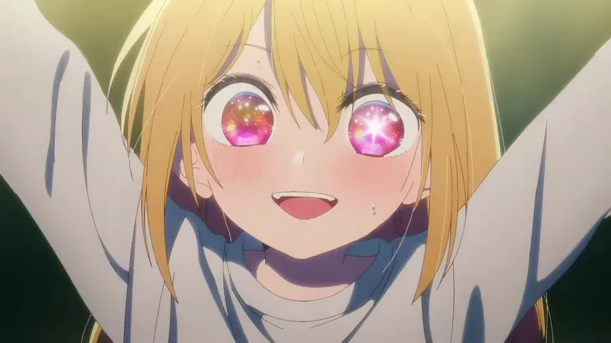
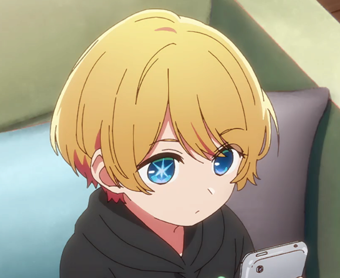

-
아이돌을 소재로 하고있어 평범한 아이돌 일상물로 보이지만 실상은 아이돌은
그저 표면적인 소재일 뿐 분위기가 상당히 무거우며, 주요 인물들의 죽음으로
본편이 시작하기 때문에 자칫 가볍게 생각하고 봤다가 프롤로그를 보고
충격을 받거나 후유증이 남을 수도 있다. 그 밖에도 연예계 안팎의 실상과
그에 따른 어둠을 부각하는 등 대체적으로 어둡고 진지한 이야기다. 특히
아카사카 아카의 대표적인 전작인 카구야 님은 고백받고 싶어 ~천재들의 연애
두뇌전~과는 분위기가 완전히 딴판이고 차라리 요코야리 멩고의 대표적인
전작인 쓰레기의 본망이 이 만화와 더 비슷한 분위기를 보이고 있다. 하지만
카구야에서 보여줬던 아카사카 아카 특유의 개그 센스는 여전히 살아 있고,
주인공 남매 주위의 인물과 조력자들이나 주인공 남매쪽의 어른들도 제대로
된 개념의 사람들이 많은 편이고 여러모로 주인공 남매들을 잘 챙겨주며
성장을 도와주기도 하는 전개가 자주 나오기 때문에 모든 회차가 어둡게만
진행되지는 않는다. 아직 연재 중인 시점이지만 일단 극초반부만 지난다면
이후 전개는 시궁창스러운 현실과 복잡한 감정변화 속에서도 그럭저럭 고난을
극복하고 성과를 이루어나가는 성장물 같은 전개를 보여준다. “만약 인기
아이돌의 자식으로 태어나서 처음부터 외모와 재능을 물려받고 연예계의
연줄도 다 가진 채로 연예계에 데뷔하면 어떨까?”라는 질문과 함께 시작하는
작품이다. 실제로 주인공 남매는 그런 장점을 살려 연예계에 유리한 조건으로
뛰어들지만,[8] 한편으로 그것만으로는 안 되는 것도 있다는 것을 알려주는
냉정한 작품이다. 2023년 4월까지의 연재분에서는 대략 10화 내외로 한
장(챕터)을 구성하는 형식을 유지하고 있다. 이 전개 안에서 온갖 파천황적
전개를 보여주며 해당 장(章)아 주제로 다루는 분야의 업계 이야기를 깊게
파다가도 해당 챕터가 끝나며 에피소드를 마무리하고 다음 장으로
넘어가는데, 그러면서도 두 환생자 쌍둥이의 복수극이라는 작품의 주제 또한
잊어버리지 않고 메인 스토리를 착실하게 전개한다. 심지어 2023년 연재
돌입한 제9장 "영화" 편에 들어서는 초반 제1장 연재 회차 초반에 나온
플래시백까지 꼼꼼하게 복선 회수를 하였다. 다만 제5장은 드물게 20화
가까이 진행되면서 스토리가 살짝 늘어진단 반응도 나왔다. 마찬가지로 길게
끌고갔던 제7장은 메인 스토리로 진행되므로 이런 반응은 적었다.
-루비짱 보러갈꺼면 클릭!--아쿠아짱 볼려면 클릭!-